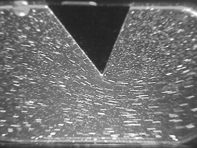
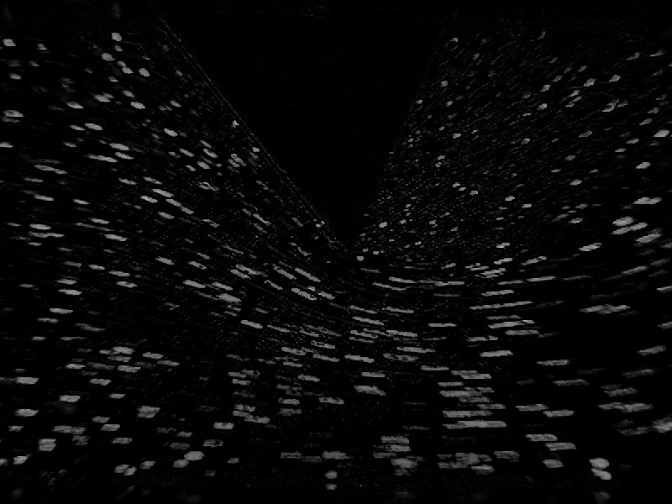
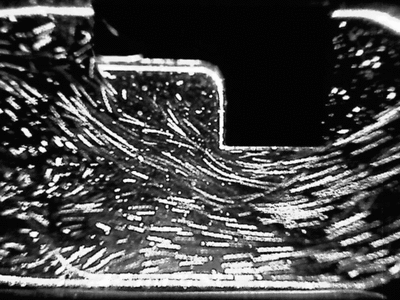
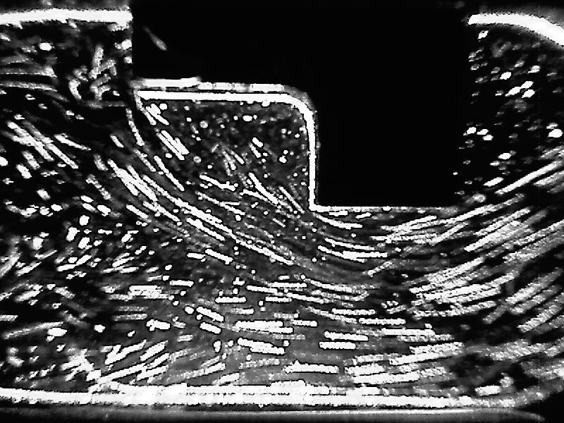

Before starting the process read the instructions completely
Controls:
Mouse cursor to aim
Press "E" to interact with the objects.
Press "Q" to quit zoom view.
Procedure
Interact with the geometry and drop them on the test section
Interact with the golden button for a close up view of the flow
Results/Analysis:
Model 1: SHARP-EDGED WEDGE
Results contain 12 consecutive frames captured using e-PIV. Below is a preview of the ani-mation of captured images.

Below are first two frames of the eleven frames from the above animation captured at Δt = 0.03 seconds from t=0 (Image 1) and Δt = 0.03 seconds from t1 (Image 2).
Image 1 at t1 = 0.03 s

Image 2 at t2 = 0.06 s
The pairs of images are processed to give velocity field. The processing can be done using an open source PIV tool e.g., PIVlab of Matlab. Each pair of images provides a set of velocity field. A contour of time-averaged velocity magnitude with an overlay of the velocity vector obtained using system software is given below.
Model 2 : STEP
Results contain 21 consecutive frames captured using e-PIV. Below is a preview of the animation of captured images.

Below are first two frames of the twenty one frames from the above animation captured at Δt = 0.03 seconds from t=0 (Image 1) and Δt = 0.03 seconds from t1 (Image 2).
Image 1 at t1 = 0.03 s

Image 2 at t2 = 0.06 s
The pairs of images are processed to give velocity field. The processing can be done using an open source PIV tool e.g., PIVlab of Matlab. Each pair of images provides a set of velocity field. A contour of time-averaged velocity magnitude with an overlay of the velocity vector obtained using system software is given below.